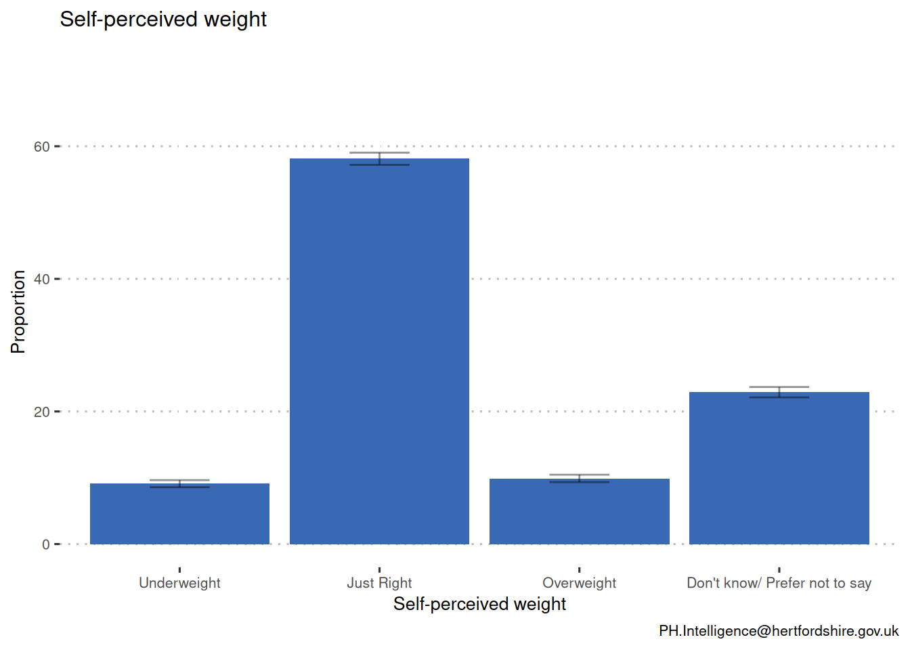
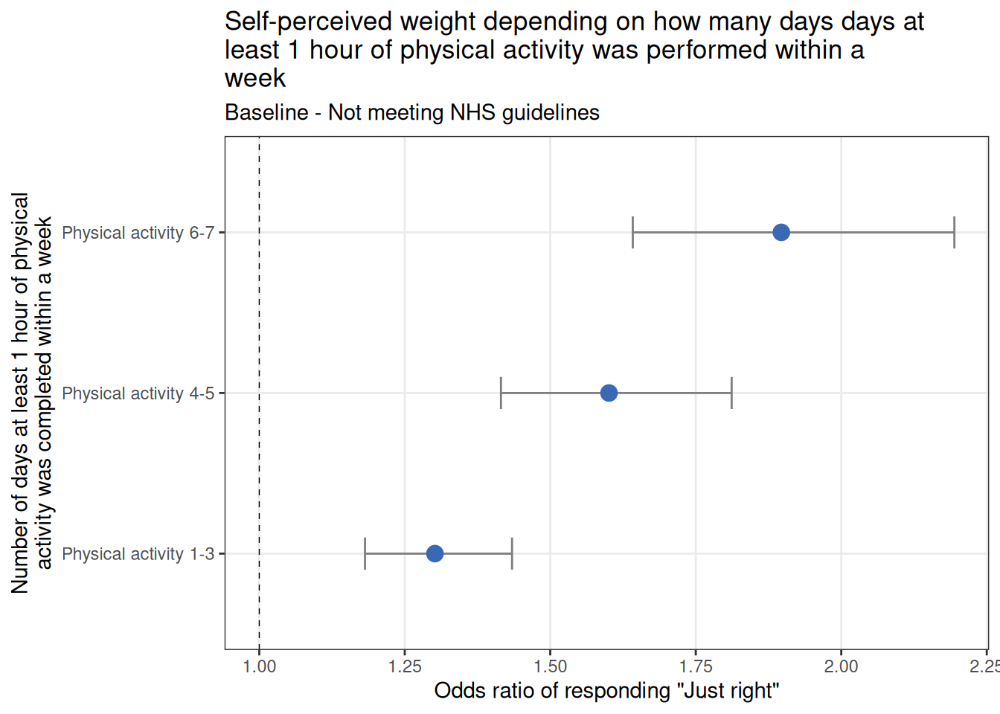
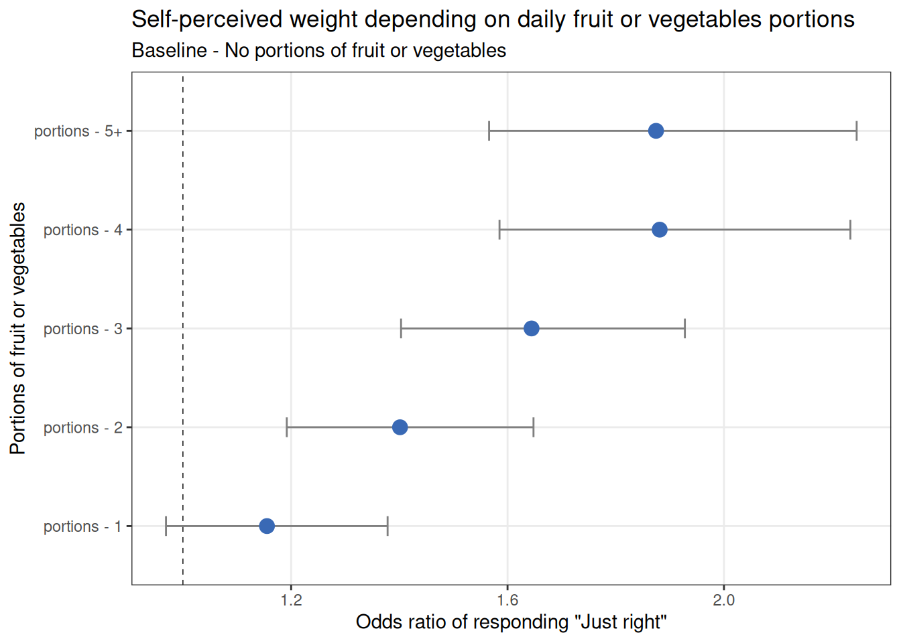
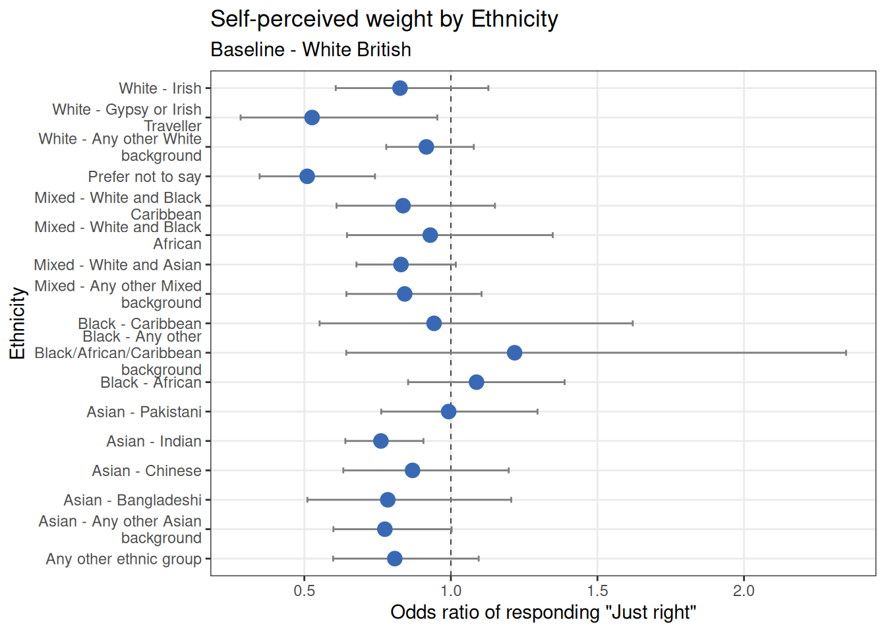
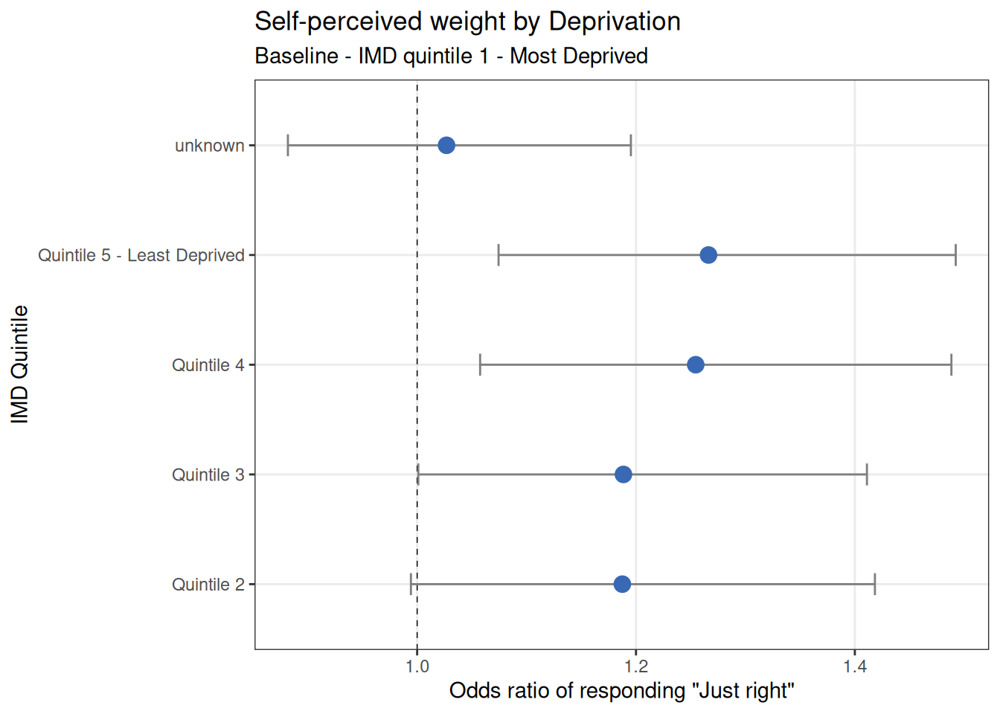

Abstract
Young people within Hertfordshire have different self-perceived weights. The World Health Organisation state that this perception is not always in line with clinical definitions of normal weight, overweight and obesity. Body size disturbances and body dissatisfaction may be caused by the development of eating disorders. This brief analysis seeks to ascertain whether a student’s self-perceived weight has a relationship with their physical activity levels and diet.
Methods
In the data collected for the latest YPHWS cohort (2021/22), 11075 students out of a total of 11151 students had a reported self-perceived weight, representing 99.3% of the total student population.
The survey contains data on the three variables of interest:
Self-perceived weight
- Self-perceived weight - How would you describe your current weight?
- Responses: Underweight, Just Right, Don’t know/ Prefer not to say, Overweight, NA
Physical activity
- Physical activity - In the past week, on how many days have you done at least an hour (60 minutes or more) of physical activity, which was enough to raise your breathing rate?
- Responses: 1 to 3, 4 to 5, 6 to 7, none
- “At least 1 hour of physical activity completed 7 days a week” is the NHS recommendations
Diet
- Portions - How many portions of fruits or vegetables did you eat yesterday?
- Responses: 0-5+
Addional information
- Sex - Please state your sex.
- Responses: Male, Female, Prefer not to say, Other, Transgender, Non-Binary
- Age - How old are you?
- Responses - 10-19 years old
- Ethnicity - What is your ethnic group?
- Responses - Various subgroups within White, Asian, Black, Mixed, also Prefer not to say, Other and NA
- IMD quintile
- Responses - IMD quintile 1-5 (1 Most deprived - 5 least deprived)
Results
Physical activity

Compared to the baseline of not performing at least 1 hour of physical activity in a day within a week, performing at least 1 hour of physical activity is associated with a significant increase in the likelihood of self-perceived weight being “Just right”. Completing at least 1 hour of physical activity 1-3 days within a week is associated with a 1.3 time increase likelihood of self-perceived weight being “Just right”. The likelihood of self-perceived weight being “Just right” increases with the number of days at least 1 hour of physical activity is completed within a week, completing 4-5 and 6-7 days is associated with an increase of 1.6 and 1.9, respectively, times likelihood of self-perceived weight being “Just right”.
Portions

Compared to the baseline of not eating any portions or fruit or vegetables the previous day, eating 2 or more fruit or vegetables the previous day was associated with a significant increase in the likelihood of self-perceived weight being “Just right”. Eating 4 or 5 portions or fruit or vegetables the previous day was a associated with a 1.88 and 1.87, respectively, times increase in likelihood of self-perceived weight being “Just right”. Eating 1 portion or fruit or vegetables the previous day was not associated with an increase likelihood of self-perceived weight being “Just right”.
Ethnicity

Compared to the baseline value, White British, no ethnicity was associated with a significant increase in likelihood of their self-perceived weight being “Just right”. However, “any other Asian background”, “Indian”, “Prefer no to say” and “Gypsy or Irish traveler” were associated with an increase likelihood of self-perceived weight being not “Just right”.
Deprivation

Compared to the baseline value of the most deprived IMD quintile, quintile 1, the less deprived areas are associated with a significant increase in the likelihood of self-perceived weight being “Just right”. Being from IMD quintile 4 or 5 - least deprived is associated with a 1.25 and 1.27, respectively, times increase in likelihood of self-perceived weight being “Just right”.
Conclusions
This report highlights that there is significant association between physical activity, fruit and vegetable consumption, ethnicity and deprivation on the impact on individuals self-perceived weight. Young people who are completing more physical activity are more likely to have reported a self-perceived weight as “Just right”. Young people who are eating more fruit and vegetables are more likely to have reported a self-perceived weight as “Just right”. Despite these findings, it cannot be said for certain whether increase physical activity and fruit and vegetable consumption causes improved self-perceived weight, it can only be claimed that there is a relationship between the variables.